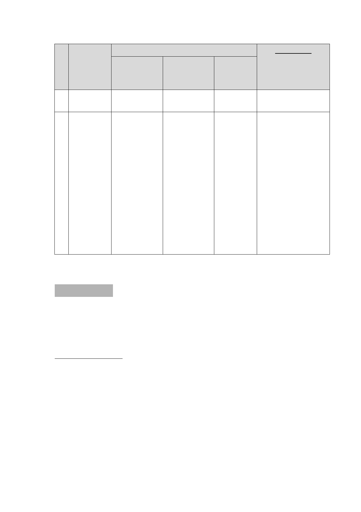

編 計畫案名
市府說明
都委會決議
號 辦理進度說明 後續應辦事項 預期提送
會議資料
時程
地區之必要性再另案
辦理。
8 變 更 臺 北 本案於 103 年 俟更新處確認 104 年 6 月。 本案同意市府所建議
市 信 義 區 12 月 17 日至 同意比例後再
提送會議資料時程
永 春 段 一 104 年 1 月 15 提送市都委會
(104 年 6 月)，並請屆
小 段 180 日辦理公開展 審議。
時依老舊公寓專案計
地 號 等 18 覽，期間有部
畫通案規定修正計畫
筆 土 地 第 分土地所有權
書內容到會續審。
三 種 住 宅 人欲撤銷本基
區 為 第 三 地更新事業計
種 住 宅 區 畫同意書，影
（特）細部 響同意比例，
計畫案
致尚無法提送
市都委會審
議。
貳、審議事項
審議事項 一
案名： 擬定臺北市中華路二段（愛國西路至汀州路）兩側商業
區細部計畫案
案情概要說明：
一、 計畫位置：
本計畫範圍東側係以中華路二段（愛國西路至汀州路）
東側進深30公尺或第一街廓為界，北起愛國西路口，南迄
汀州路一段；另為加強該路段兩側商業活動與西側商業中
心之連結，併同納入西側國中用地(龍山國中)之南北兩街
廓所圍範圍，合計面積約3.66公頃。
-6-